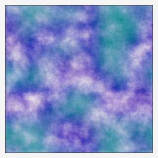
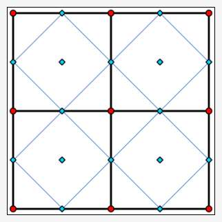
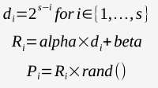

Plasma blends and perturbs an input image based on the Diamond-Square Algorithm producing an effect similar to hovering smoke, fog, thin altostratus cloud formations and other undulating hazes.
G'MIC's implementation samples, blends, and perturbs either images or constant color fields (including black), in the latter case generating cloud-like patterns. Gray scale plasma patterns are often used as height maps for three dimensional mountainous terrain.
As a sampling and blending algorithm, the command tends to preserve the local average intensity within imagery, but with a randomizing component, also introduces visual roughness. Thus plasma shares attributes with both blurring and noisemaking filters, often to singular effect.
The algorithm proceeds in discrete stages from initially coarse- to fine-scale grids, the number of such being set by the scale parameter. At each stage, the algorithm samples the existing image at the current grid intersection points, blends these data into a set of interpolated points, then randomly perturbs these, the intensity of such controlled by scale, alpha and beta (see 'How the Parameters Interact', below). The new sample points, added to those present at the start of a stage, together compose the finer-mesh sampling grid of the next stage. When the fineness of the grid reaches pixel dimensions, the algorithm ceases.
The Diamond-Square algorithm draws its name from the formation of its sampling grid, which, at a particular stage, consists of horizontally and vertically aligned cells with sides of length d, (the “squares”) and a slightly finer grid with sides d ⁄ √2 orientated at 45° (the “diamonds”). The two sampling and blending grids operate in concert to minimize the formation of horizontally and vertically aligned artifacts that would be otherwise present with grids of a single orientation. The finer grid, consisting of the side midpoints and center points of the coarser grid, combine together with the square grid to form the d /2 square grid of the next stage, from which the next stage diamond grid is derived.
The format of the command is:
plasma _alpha,_beta,_scale
The Diamond-Square algorithm employs a combination of:
Beginning with a coarse-mesh grid, the Diamond-Square algorithm progresses through a series of grids, sample-averaging and perturbing the results at ever-so-finer scales, stopping at the 1 pixel scale.
Scale sets the number of grids which the algorithm uses, and from which follows directly the coarseness of the initial grid:
d = 2s for d, length of sides of the initial grid, in pixels, and s, scale, given as a parameter.
For large scale parameters, the mesh of the initial grid is very coarse, sample points are far apart and are averaged over a wide distance. Consequently, the very first samples tend to influence pixels over a very wide area and form the basis for large features. A large scale parameter also means that the algorithm will operate over many stages, each with sample points half the distance apart from each other as the previous grid, so that details arising from random perturbations occur at many scales, giving rise to nuanced effects.
On the other hand, small scale parameters lead to initial grids that are already fine, so the range of influence that grid points have is limited and feature size in the final image is small. The number of grids that the algorithm runs through is also small, so the algorithm stops after only a few iterations, further limiting large-scale effects. A scale of one operating over a constant color field is barely distinguishable from random noise.
Scale, alpha and beta together establish the perturbation amount at each stage, i, of the algorithm, an amount that generally gets smaller as the algorithm progresses through ever finer grids, though the amount of decay depends on particular choices of the three parameters. Here are the relationships among them:

As the algorithm progresses through the grids, i, from 1 to s, it computes a perturbation offset, Pi, which it adds to each new intermediary grid point. Pi, in turn, arises from a scaled decay factor, the product of alpha, the first parameter from the command line, and a grid-dependent scale factor, di. To this component, the algorithm adds a scale independent factor, beta, the second parameter from the command line. The grid-dependent decay factor, di begins as a relatively large factor, when the initial coarse grids are in play, but it decreases by powers of two as the finer grids come into play.
The size of the image virtually places a cap on the effect of scale. A normal plasm has a near-zero, perhaps slightly positive average. That is, the minimum value of a plasma-generated image is nearly equal in magnitude to the maximum value, and of opposite sign. But as one increases scale without increasing the size of the image, there comes a point when the features in the image do not grow larger. That is because the coarsest grids are larger than the image size itself – recall that these grow by powers of two.
Instead, excessive scale shows up as an image bias. Both the image minimum and maximum grow in tandem. For really excessive values of scale, both the image minimum and maximum will be on the order of a million or ten million, yet be separated by a difference of only a hundred or so. When experimenting with plasmas, keep track of image minima and maxima: if they are not nearly equal and opposite, chances are that scale is uselessly large.
Garry Osgood